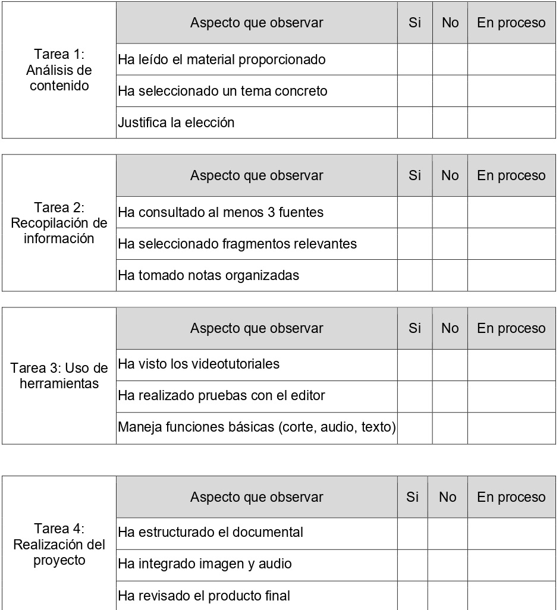

Texto
Aquí os dejo primero los criterios de evaluación de la unidad.
| Tarea 1 |
3.4. Analizar procesos de cambio histórico y comparar casos del ámbito de la Historia y la Geografía a través del uso de fuentes de información diversas, teniendo en cuenta las transformaciones de corta y larga duración (coyuntura y estructura), las continuidades y permanencias en diferentes períodos y lugares. 2.2. Producir y expresar juicios y argumentos personales y críticos de forma abierta y respetuosa, haciendo patente la propia identidad y enriqueciendo el acervo común en el contexto del mundo actual, sus retos y sus conflictos, desde una perspectiva sistémica y global. |
| Tarea 2 |
1.3. Transferir adecuadamente la información y el conocimiento por medio de narraciones, pósteres, presentaciones, exposiciones orales, medios audiovisuales y otros productos. 1.2. Establecer conexiones y relaciones entre los conocimientos e informaciones adquiridos, elaborando síntesis interpretativas y explicativas, mediante informes, estudios o dosieres informativos, que reflejen un dominio y consolidación de los contenidos tratados. |
| Tarea 3 | 5.1. Conocer, valorar y ejercitar responsabilidades, derechos y deberes y actuar en favor de su desarrollo y afirmación, a través del conocimiento de nuestro ordenamiento jurídico y constitucional, de la comprensión y puesta en valor de nuestra memoria democrática y de los aspectos fundamentales que la conforman, de la contribución de los hombres y mujeres a la misma, y la defensa de nuestros valores constitucionales |
| Tarea 4 |
1.1. Elaborar contenidos propios en distintos formatos, mediante aplicaciones y estrategias de recogida y representación de datos más complejas, usando y contrastando críticamente fuentes fiables, tanto analógicas como digitales, del presente y de la historia contemporánea, identificando la desinformación y la manipulación. 6.1. Rechazar actitudes discriminatorias y reconocer la riqueza de la diversidad, a partir del análisis de la relación entre los aspectos geográficos, históricos, ecosociales y culturales que han conformado la sociedad globalizada y multicultural actual, y del conocimiento de la aportación de los movimientos en defensa de los derechos de las minorías y en favor de la inclusión y la igualdad real, especialmente de las mujeres y de otros colectivos discriminados. |
La evaluación se realizará a través de estos dos instrumentos. En primer lugar la rúbrica:

También se utilizará esta lista de cotejo:
